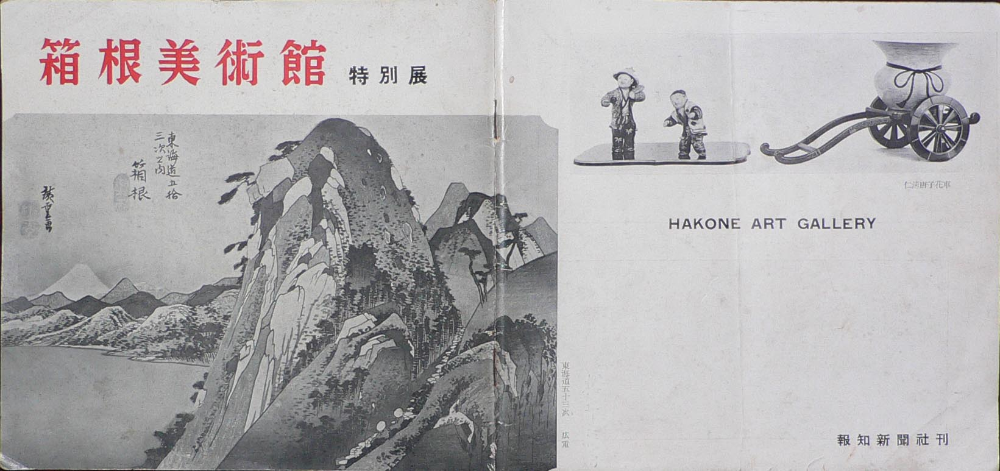
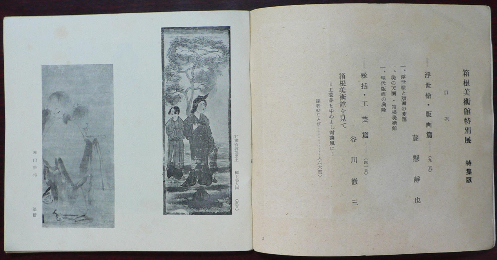
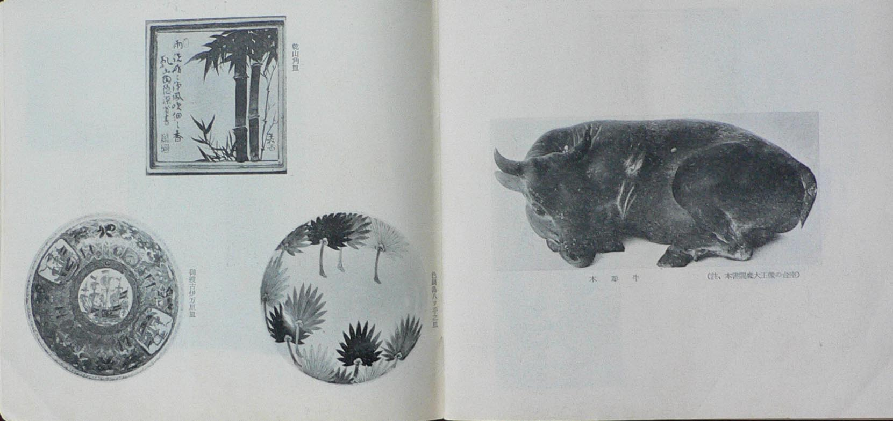

――― 岡
田 自 観 師 の 論 文 集 ――発行誌別
箱根美術館 特別展 パンフレット
 |
箱根美術館 特別展 パンフレット （広重 東海道五十三次 箱根） |
 |
昭和２８年の箱根美術館特別展のパンフレット
|
 |
著者紹介 藤懸静也氏 文学博士 茨城県生まれ、東京帝国大学史学科卒、美術史の研究を専攻、文部省国宝監査官、東京帝国大学教授を歴任、代表的著書に「浮世絵版画史」「浮世絵」「浮世絵の研究」などあり、浮世絵、版画の評論家として知られる。 谷川徹三氏 現法政大学第一文学部長、愛知県生まれ、京都帝国大学哲学科卒、西田哲学門下、京都絵画専門学校、龍谷大学、法政大学各教授を歴任、一時国立博物館次長だったこともある。著書に「ヒューマニズム」「戦争と平和」などあり、文化、美術評論家として名高い。 |